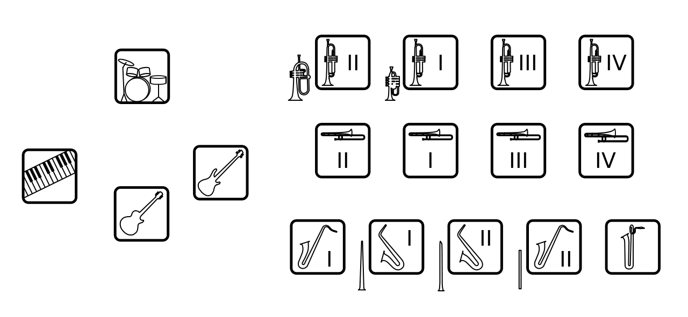
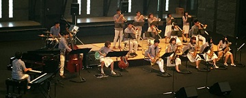

CSJOとは、芝浦工業大学 文化会 軽音楽部の別称です。
私達のバンドは"ビッグバンドジャズ"という構成のバンドです。
ビッグバンドはサックス５人、トロンボーン４人、トランペット４人で成るホーンセクションと、
ピアノ、ギター、ベース、ドラムの１人ずつで成るリズムセクションの計17人という構成が基本のバンドです。
またCSJOでは、3年生を中心としたRegularバンドと1年生と2年生のJuniorバンドで活動しています。
 
普段は大宮校舎にある練習室でRegularとJuniorの交互で練習しています。
学内の発表会や他大学とのジョイントコンサート、さらには学生ビッグバンドが日本一を目指す山野ビッグバンドジャズコンテストに参加したりと積極的な活動をしています。
また、春休みと夏休みには合宿で楽しく練習します。
A.全然大丈夫です！
実際に初心者で始めてうまく吹けるようになった人もいます。高校まで運動部で大学から楽器を始めた人もいます。
もちろん練習が必要ですが、しっかりすれば必ず伸びます。
幾何学に王道なし…じゃなくて、音楽に王道なしです（笑）
A.これも大丈夫です！ほとんどの楽器は部室に予備がありますので、それを使うことができます。
自然と自分のが欲しくなってしまうものですので買ってしまうのも手かもしれません！
A.部員で、高校まで吹奏楽をやってきた人も多いですが、ほとんどの人がジャズ未経験で入部します。
先輩の丁寧な指導でジャズらしい音になっていきます。
スウィングとは…このことをここに記すには余白が狭すぎる。
ということで入部して一緒に学びましょう（笑）
A.こちらから連絡をしていただくか、直接部室に来ていただければもっと詳しいお話ができます。